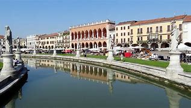

Sunt recunoscătoare că am participat la Breaking Barriers 2024-2025. A fost o experiență foarte utilă, în care am învățat multe despre programarea site-urilor și aplicațiilor. Trainerii au fost super prietenoși și mereu dispuși să ajute. Mă bucur că am făcut parte din acest curs!
Câinele este unul dintre cele mai loiale și iubitoare animale de companie. Este cunoscut pentru inteligența sa, capacitatea de a învăța comenzi și dorința de a-și proteja stăpânul. Există sute de rase, fiecare cu trăsături diferite, de la câini de pază puternici la rase mici și jucăușe. Pe lângă faptul că sunt animale de companie minunate, câinii sunt folosiți și în diverse domenii, precum poliția, salvarea de persoane sau terapia asistată. Ei formează legături puternice cu oamenii și sunt mereu gata să ofere afecțiune și companie.
Italia este o țară din sudul Europei, cunoscută pentru istoria sa bogată, arta impresionantă și bucătăria delicioasă. Este leagănul Imperiului Roman și al Renașterii, având orașe faimoase precum Roma, Florența, Veneția și Milano. Italia este renumită pentru monumente precum Colosseumul, Turnul din Pisa și Vaticanul. De asemenea, gastronomia italiană este iubită în întreaga lume, cu preparate celebre precum pizza, paste și gelato. Pe lângă cultură și istorie, Italia are și peisaje spectaculoase, de la Alpii în nord până la plajele însorite din sud.

Padova este un oraș din nord-estul Italiei, situat în regiunea Veneto, aproape de Veneția. Este cunoscut pentru Universitatea din Padova, una dintre cele mai vechi din Europa, unde a predat Galileo Galilei. Unul dintre cele mai faimoase obiective este Basilica Sfântului Anton, un loc de pelerinaj important. Orașul are și frumoasa Prato della Valle, una dintre cele mai mari piețe din Europa. Padova combină istoria, arta și viața studențească, oferind o atmosferă vibrantă și autentică.
Jurnalele Vampirilor (The Vampire Diaries) este un serial de televiziune american bazat pe romanele scrise de L.J. Smith. Lansat în 2009, serialul urmărește povestea Elenei Gilbert, o adolescentă din Mystic Falls, care se îndrăgostește de Stefan Salvatore, un vampir misterios. Pe măsură ce relația lor evoluează, apare și fratele lui Stefan, Damon, mai rebel și imprevizibil, ceea ce duce la un triunghi amoros complicat. Serialul combină elemente de supranatural, romantism și acțiune, explorând luptele dintre vampiri, vârcolaci, vrăjitoare și alte creaturi mitice. A avut un mare succes și a generat două spin-off-uri: The Originals și Legacies.
Pastele cu creveți sunt un preparat delicios și apreciat în bucătăria mediteraneană, combinând gustul bogat al pastelor cu aroma delicată a fructelor de mare. Se pregătesc de obicei cu paste lungi, precum spaghetti sau linguine, iar creveții sunt gătiți rapid în ulei de măsline, usturoi și condimente precum ardei iute și pătrunjel. Uneori, se adaugă și un sos pe bază de roșii sau smântână pentru un plus de savoare. Acest fel de mâncare este apreciat pentru simplitatea sa, dar și pentru echilibrul perfect dintre texturi și arome.